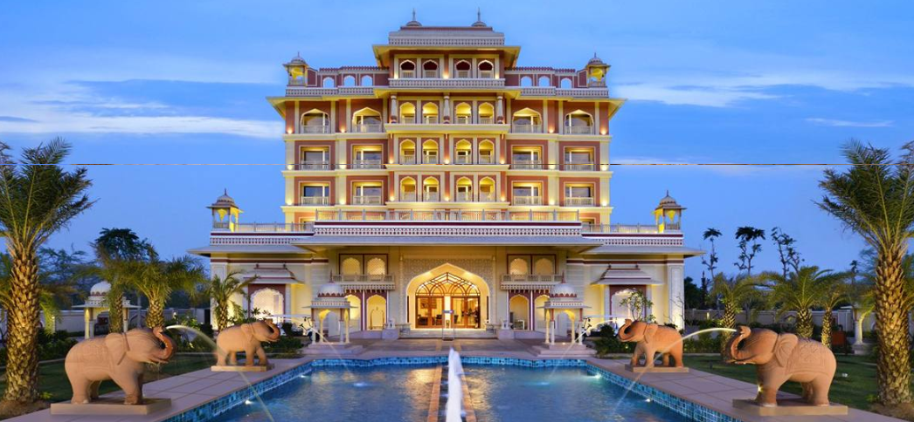
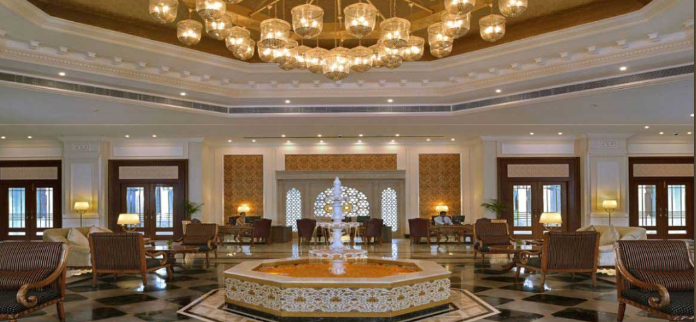
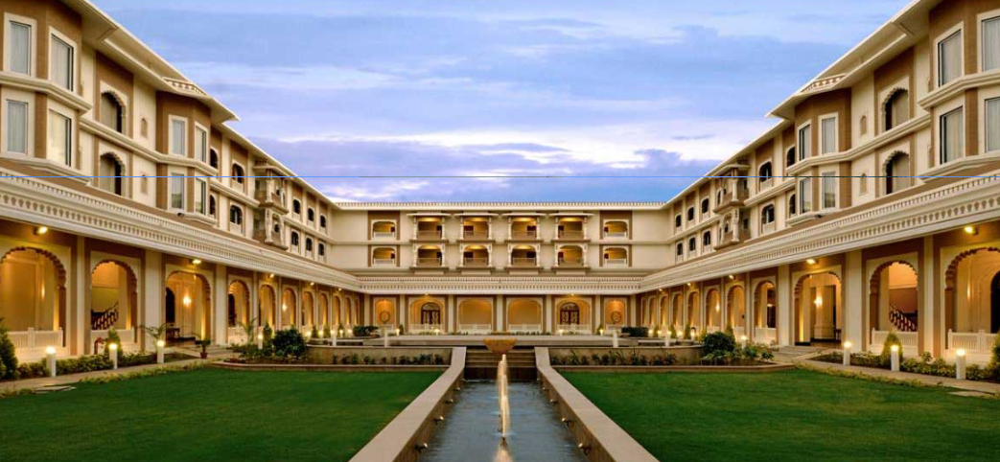
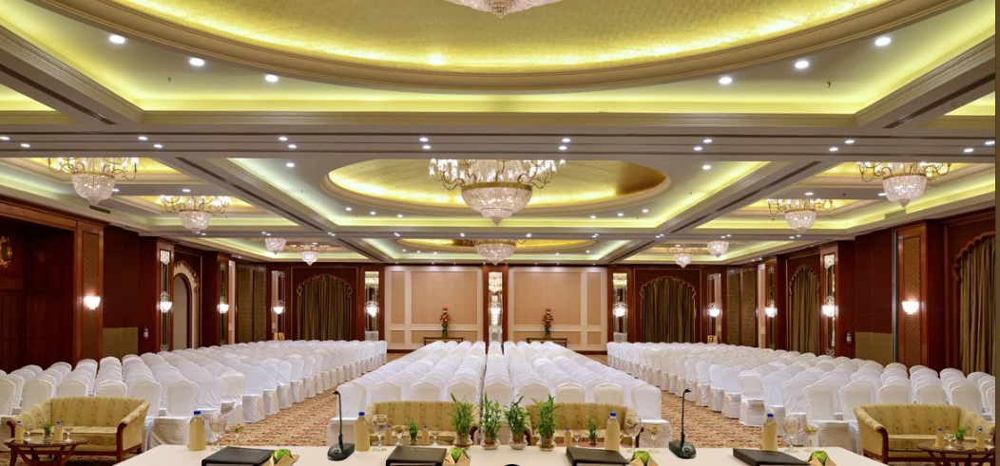
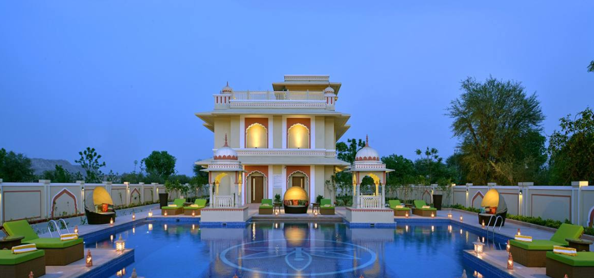
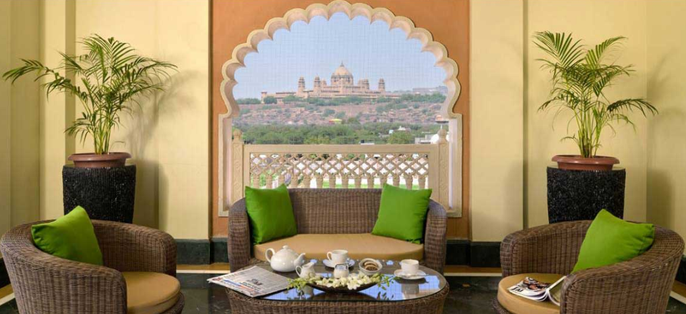

<div class="container project-view">
    
	<div class="row">
        <div class="col-md-8 project-images">
            
            
            
            
            
            
            
            
        </div>
        <div class="col-md-4">
            <div class="project-info">
                <h2>Indana Palace</h2>

                <div class="details">
                    <div class="info-text">
                        <span class="title">Location</span>
                        <span class="val">Jodhpur, Rajasthan</span>
                    </div>

                    <div class="info-text">
                        <span class="title">Category</span>
                        <span class="val">Luxury Wedding</span>
                    </div>
                </div>

					INDANA PALACE BLENDS THE RICH CULTURAL HERITAGE OF RAJASTHAN’S ROYAL PAST WITH THE ECO-FRIENDLY CONCERNS OF TODAY AND EVERY CONVENIENCE MODERN TRAVELLERS HAVE COME TO EXPECT.
					ITS ARCHITECTURE ECHOES THE ROYAL MARWAR HERITAGE WITH EXQUISITE COLUMNS, INTRICATE JAALI WORK, REGAL ARCHES AND DOMES AND WIDE OPEN COURTYARDS.
					<br/><br/>
					SIT OUTS AND LARGE OPEN LOOKOUT POINTS DOT THE WINDING CORRIDORS, SO THAT EVERY STEP YOU TAKE INSIDE AND OUT LEAVES YOU FEELING LIKE YOU ARE EXPLORING YOUR OWN PRIVATE PALACE.
					DESIGNED TO BE MORE THAN JUST A TEMPORARY ABODE, IT OFFERS AN IMMERSIVE ROYAL RAJASTHANI EXPERIENCE. 
					            
			</div>
        </div>
    </div>
</div>